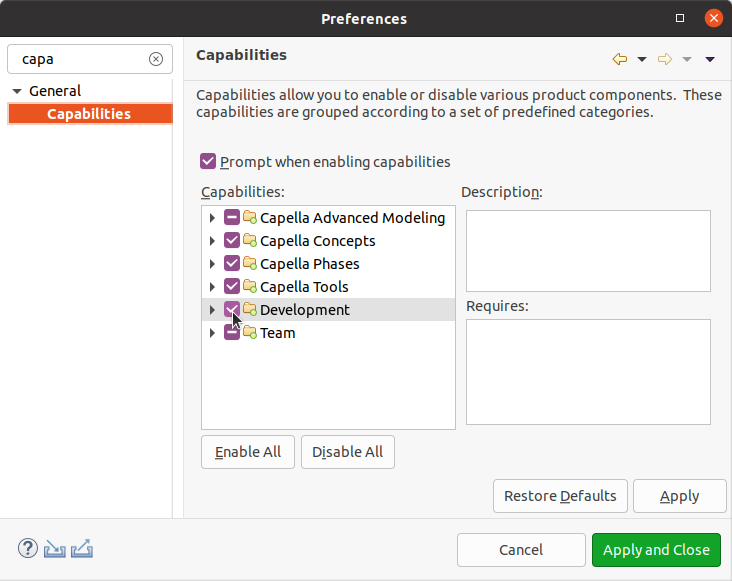

Enable Development Capabilities
This section explains how you can enable development capabilities. This will be needed for some operation such as
Run and
Debug.
You will need to enable Development capabilities if it’s not already done:
- select the Window > Preferences menu
- with the filter a the top left corner search for "capabilities"
- select the Capabilities node on the left
- select the Development capability to enable it
- click the Apply and Close button
